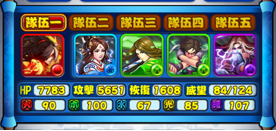
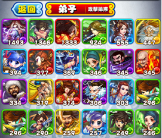

侠客菜单包括但不仅限于以下选项和功能:
编队

队伍编成，最多由五名侠客组成队伍，队伍最左边的是掌门。
强化
侠客通过融合其他侠客提升侠客等级从而提升战斗能力，强化讲消耗铜钱，融合拥有相同技能的侠客讲有几率提升侠客技等级。
转生
满级侠客可以通过消耗特定的转生道具进行转生，转生后侠客等级变成1，侠客星级提升，所有基础属性提升，部分侠客技能与掌门技能也将得到提升。
出售
出售侠客获得铜钱，编队中的侠客不可出售。
弟子

存放侠客的地方，可在此查看当前拥有的全部侠客。